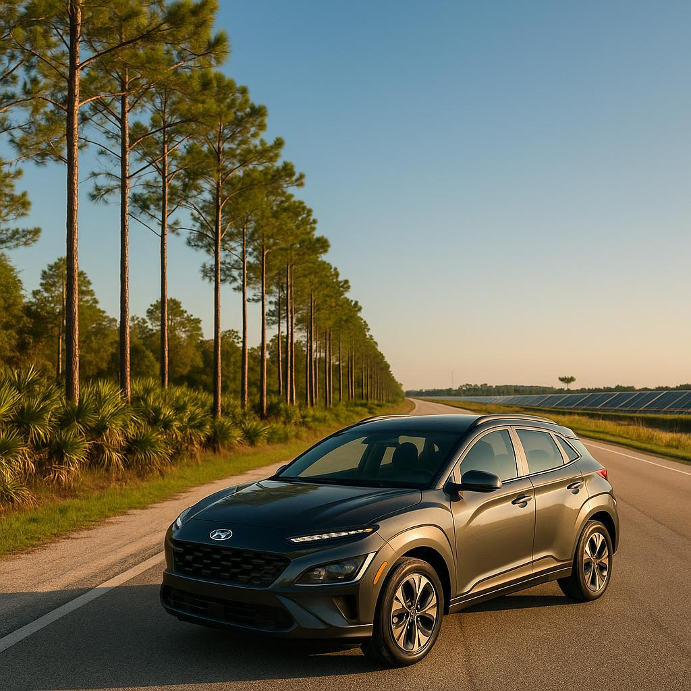

Travel Guide · June 16, 2026

Most visitors to Southwest Florida spend their days chasing beach sunsets — and we fully support that lifestyle. But tucked about 30 miles northeast of Cape Coral lies one of the most genuinely fascinating destinations in the entire state: Babcock Ranch. It's simultaneously a working model of sustainable community living and the gateway to thousands of acres of pristine Florida wilderness. Whether you're a nature lover, a curious newcomer scouting the region, or a snowbird looking for something beyond the usual itinerary, a day out here is time very well spent.
The drive is part of the experience. Heading north from Cape Coral or Fort Myers, the strip malls gradually give way to wide ranch fences, cypress stands, and big open sky — a reminder that "old Florida" is still very much alive once you leave the coast behind.
Before Babcock Ranch became a planned community, this land was the legendary Crescent B Ranch, a 91,000-acre working cattle and timber operation. Today, the eastern portion is protected as Babcock/Webb Wildlife Management Area, and Babcock Wilderness Adventures runs guided swamp buggy tours through a private slice of it that most visitors never see otherwise.
Here's what a typical 90-minute tour delivers:
Tours run most mornings and some afternoons — book online in advance, as they sell out quickly, especially in winter. Closed-toe shoes and bug spray are your two non-negotiable packing essentials.
After the tour, head a few miles west into Babcock Ranch Town Center — a genuinely walkable village built from the ground up around a massive solar energy array. When Hurricane Ian roared through in 2022, Babcock Ranch made national news for being one of the only communities in the region that kept its lights on and its streets clear. That resilience is baked into the town's DNA.
Spend an hour or two exploring:
If you happen to visit on a Sunday, time your arrival to catch the farmers' market — local honey, fresh produce, artisan goods, and some of the best people-watching in Charlotte County.
Hunger after a swamp buggy adventure hits different. Luckily, the Town Center has you covered. Slater's Provisions is the anchor dining spot — a casual, family-friendly restaurant and market with a menu that leans into Florida flavors: fresh fish sandwiches, hearty bowls, house-made soups, and an impressive local beer selection. The patio overlooks Lake Babcock and is particularly magical in the late-afternoon light.
For a quick caffeine fix before your tour, Curry Creek Outfitters area shops and the nearby café kiosks in Founder's Square keep the cold brew flowing. On your way back toward Cape Coral or Fort Myers, the small town of Punta Gorda is a natural stop for a sunset dinner along the waterfront — and conveniently sits right between Babcock Ranch and both PGD and RSW airports.
A few things to know before you go:
If you're flying into Punta Gorda Airport (PGD) or Fort Myers (RSW), SafeWheels Rentals can meet you right at the airport and have you on the road toward Babcock Ranch within minutes of landing. We also deliver within 50 miles of the Fort Myers / Cape Coral area — so wherever you're staying, the adventure starts at your door.